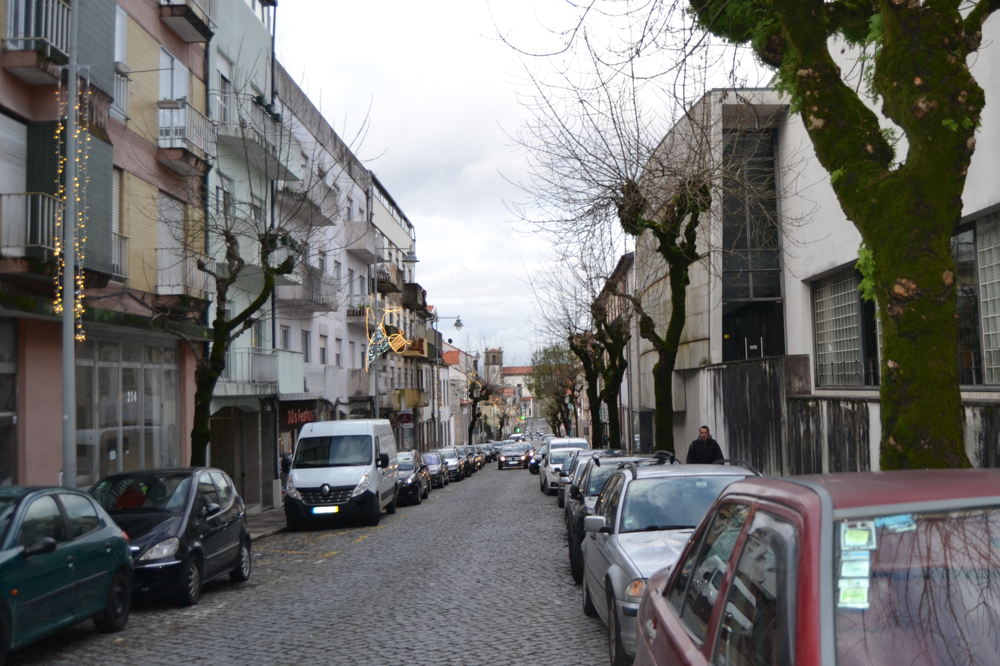

Rua Verde
Imagens antigas:


Imagens atuais:

Descrição:
Longa rua, com início no postigo de S. Sebastião e fim na rua de Maximinos. O seu traçado prolongava-se, porém, até à Porta de S. Francisco, através das ruas dos Sapateiros e do Campo. postigo de S. Sebastião e fim na rua de Maximinos. O seu traçado prolongava-se, porém, até à Porta de S. Francisco, através das ruas dos Sapateiros e do Campo.
Decalcando, uma rua da cidade romana, era esta a mais ocidental das artérias intra-muros da velha urbe medieval.
Ponto privilegiado nas ligações com Maximinos e a capela de S. Sebastião, o seu traçado foi no séc. XIX (inícios?) violentamente rompido com a continuação da rua das travessas, que, abrindo uma brecha nas muralhas, a ligou com o campo de S. Miguel o Anjo; no fim do mesmo século, por volta de 1880, foi alargada, sendo destruídas todas as casas, excepto uma, de dois pisos, no seu extremo Norte, recebendo então o nome de D. Frei Caetano Brandão. Maximinos e a capela de S. Sebastião, o seu traçado foi no séc. XIX (inícios?) violentamente rompido com a continuação da rua das travessas, que, abrindo uma brecha nas muralhas, a ligou com o campo de S. Miguel o Anjo; no fim do mesmo século, por volta de 1880, foi alargada, sendo destruídas todas as casas, excepto uma, de dois pisos, no seu extremo Norte, recebendo então o nome de D. Frei Caetano Brandão.
Em 1750 apresentava-se dividida em duas: uma, a Norte da rua das Travessas com o nome de rua Verde; outra, a Sul, chamada somente Couto do Arvoredo. 1750 apresentava-se dividida em duas: uma, a Norte da rua das Travessas com o nome de rua Verde; outra, a Sul, chamada somente Couto do Arvoredo.
O Couto do Arvoredo estava parcialmente construído (ainda hoje, aliás, do lado Este conserva os quintais; e os do Oeste só nos anos 60 e 70 do nosso séc. foram ocupados com habitações), com casas simples, de 2 pisos, de um tipo mais frequente fora de muralhas, nos arrabaldes, sem varandas e com as janelas apenas tapadas por portas de madeira. Couto do Arvoredo estava parcialmente construído (ainda hoje, aliás, do lado Este conserva os quintais; e os do Oeste só nos anos 60 e 70 do nosso séc. foram ocupados com habitações), com casas simples, de 2 pisos, de um tipo mais frequente fora de muralhas, nos arrabaldes, sem varandas e com as janelas apenas tapadas por portas de madeira.
A rua Verde, embora apresente um tipo de casa também muito simples, e de contrução sem dúvida arcaica, estava já em 1750 toda construída. Mantém, todas as casas apenas com dois pisos (excepto duas), com aberturas predominantemente tapadas por portadas de madeira, raríssimas gelosias e varandas e algumas casas com janela do tipo bracarense. Muito curiosos são os primeiros cinco edifícios do lado Nascente e uma boa parte dos do Poente: são geralmente de dois vãos, 2 pisos, porta no rés do chão e 2 janelas no andar, com um ritmo bem marcado e, sobretudo, com o sobrado muito pronunciado, mostrando bem a fragilidade dos seus materiais construtivos. rua Verde, embora apresente um tipo de casa também muito simples, e de contrução sem dúvida arcaica, estava já em 1750 toda construída. Mantém, todas as casas apenas com dois pisos (excepto duas), com aberturas predominantemente tapadas por portadas de madeira, raríssimas gelosias e varandas e algumas casas com janela do tipo bracarense. Muito curiosos são os primeiros cinco edifícios do lado Nascente e uma boa parte dos do Poente: são geralmente de dois vãos, 2 pisos, porta no rés do chão e 2 janelas no andar, com um ritmo bem marcado e, sobretudo, com o sobrado muito pronunciado, mostrando bem a fragilidade dos seus materiais construtivos.
Das 24 casas do lado Nascente e 33 do Poente, 3 e 13 são, respectivamente, prazos do Cabido.
Lista das casas
-
Número 1 Enfiteuta Maria Catarina do Céu, religiosa do Salvador Foro 170 reis e 2 galinhas Descrição Confronta, do sul, com casa foreira à cororaria.
-
Número 2 Enfiteuta Faustina Pereira Foro 180 reis e 1 galinha Descrição A enfiteuta é filha de Francisco Rodrigues, torneiro. Francisco Rodrigues, torneiro.
Confronta, do norte, com casa foreira à cororaria. Entre os anos de 1670 e 1724 esteve unida ao n.º 3. 1670 e 1724 esteve unida ao n.º 3.
-
Número 3 Enfiteuta Constantino Teixeira Foro 175 reis e 1 galinha Descrição ??? -
Número 4 Enfiteuta ??? Foro ??? Descrição Corresponde, desde o ano 1627, à casa n.º 12 da Rua de St.º António. Encontra-se situada defronte do postigo de S. Sebastião. 1627, à casa n.º 12 da Rua de St.º António. Encontra-se situada defronte do postigo de S. Sebastião.
-
Número 5, 6 e 7 Enfiteuta António Pereira, sapateiro Foro 100 reis e 1 galinha Descrição O enfiteuta é filho de Teresa da Costa e de seu marido António Pereira. Teresa da Costa e de seu marido António Pereira.
Encontram-se situadas junto ao postigo de S. Sebastião e foram construídas, antes de 1563, no «lugar do Sabugal», pertencente ao n.º 12 da Rua de Sto. António. postigo de S. Sebastião e foram construídas, antes de 1563, no «lugar do Sabugal», pertencente ao n.º 12 da Rua de Sto. António.
-
Número 8 Enfiteuta Teresa da Costa, viúva de António Pereira Foro 2 galinhas Descrição Quintal denominado do Sabugal, que foi de José de Araújo Teixeira. José de Araújo Teixeira.
-
Número 9 e 10 Enfiteuta Salvador Pinto, guarda da Sé Foro 220 reis e 2 galinhas Descrição Estão unidas, num só prazo, desde o ano de 1549. A casa n.º 9, confronta, do sul com casa foreira ao Hospital de S. Marcos. 1549. A casa n.º 9, confronta, do sul com casa foreira ao Hospital de S. Marcos.
-
Número 11 Enfiteuta ??? Foro ??? Descrição Paga pensão à obra da Sé. São enfiteutas os herdeiros de Maria Ribeiro, que pagam 80 reis de foro. Maria Ribeiro, que pagam 80 reis de foro.
-
Número 12 Enfiteuta José Pereira, sapateiro Foro 95 reis e 1 galinha Descrição O enfiteuta foi dotado com esta casa.
-
Número 13 Enfiteuta Manuel da Costa Vasconcelos Foro 320 reis e 7 galinhas Descrição ??? -
Número 14 Enfiteuta Padre Matias de Lemos Foro 30 reis e 2 galinhas Descrição Entre os anos de 1609 e 1640 pertenceu ao n.º 13. 1609 e 1640 pertenceu ao n.º 13.
-
Número 15 e 16 Enfiteuta Manuel da Costa Vasconcelos Foro 265 reis e 2 galinhas Descrição ??? -
Número 17 e 18 Enfiteuta Os herdeiros de Duarte Mendes de Oliveira Foro 1 galinha Descrição Os enfiteuras pagavam um foro muito pequeno, dado que as casas tinham sido consideradas arruinadas no último emprazamento, etectuado no ano de 1673. 1673.
Confrontam, do Sul, com casas foreiras ao Hospital de S. Marcos. Hospital de S. Marcos.
-
Número 19 Enfiteuta Manuel Vieira Foro 225 reis e 2 galinhas Descrição Estas casas tinham pertencido a Isabel da Silva e, anteriormente, a Julião Lopes. Isabel da Silva e, anteriormente, a Julião Lopes.
-
Número 20 Enfiteuta ??? Foro ??? Descrição Corresponde ao n.º 12 da Rua de Maximinos, para onde tem a fronteira e serventia principais. Rua de Maximinos, para onde tem a fronteira e serventia principais.